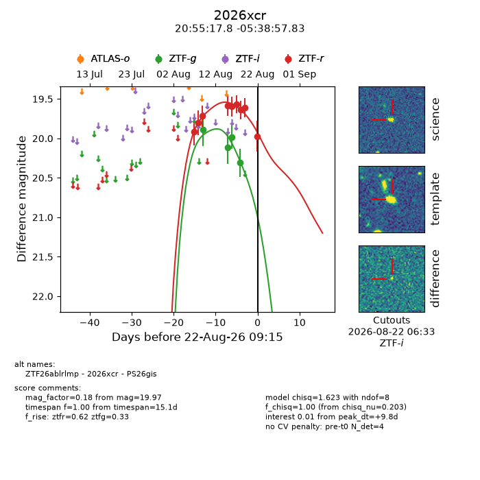
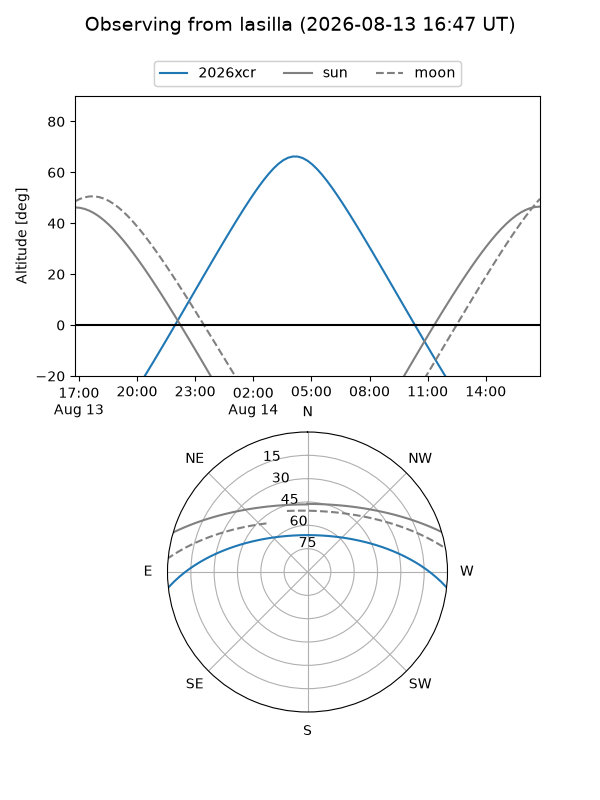
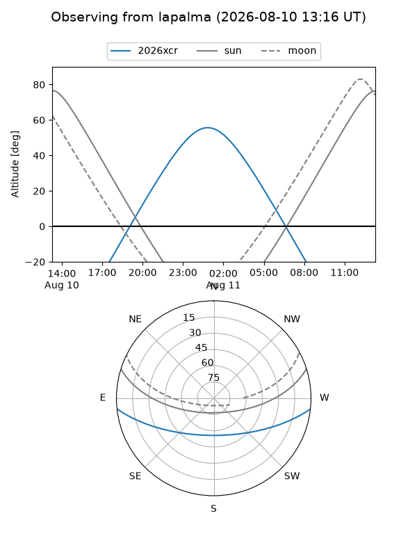
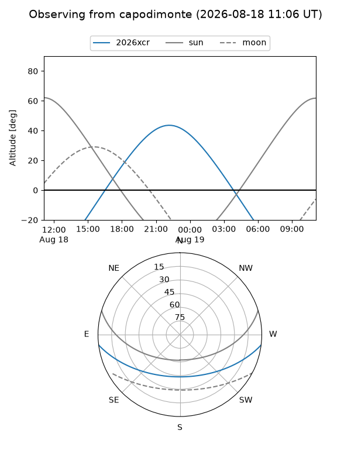
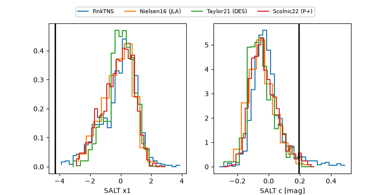

2026xcr
Target 2026xcr at 2026-08-22 09:17
Aliases and brokers:
FINK-ZTF: ztf.fink-portal.org/ZTF26ablrlmp
Lasair-ZTF: lasair-ztf.lsst.ac.uk/objects/ZTF26ablrlmp
ALeRCE-ZTF: alerce.online/object/ZTF26ablrlmp
YSE-PZ: ziggy.ucolick.org/yse/transient_detail/2026xcr
TNS name: wis-tns.org/object/2026xcr
Direct TNS query: direct search
alt names
ZTF26ablrlmp (ztf,fink_ztf)
2026xcr (tns,yse)
PS26gis (panstarrs)
Coordinates:
equatorial (ra, dec) = 313.8241,-5.64940
equatorial (HMS+DMS) = 20:55:17.79,-05:38:57.83
galactic (l, b) = (42.6317,-30.03775)
Flags:
TNS type: nan
peak dt: +9.8
Photometry:
last ztfg=20.31, ztfr=19.97
4 ztfg, 9 ztfr detections
Lightcurve

Visibility



Additional plots
